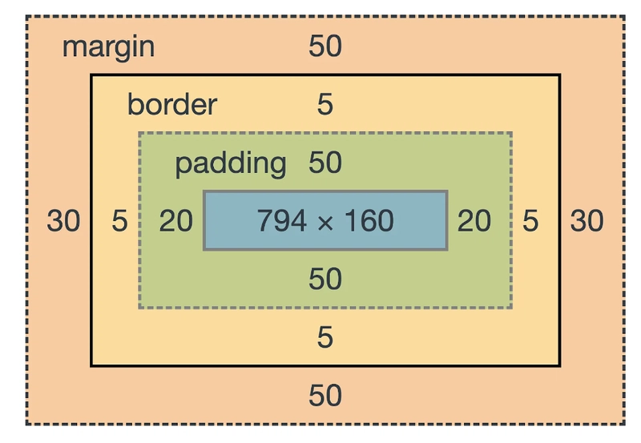

I'm a box
Everything on the webpage is a box. To differentiate between padding, border, and margin:
- `padding` --- between the border and content
- `border` --- between the margin and padding
- `margin` --- between self's and adjacent's borders

Practical tips
- Use `box-sizing: border-box` for predictable sizing behavior. See box model.
- Use Margin for spacing between elements.
- Use Padding for spacing within an element.
- `Ctrl+Shift+C` to inspect elements